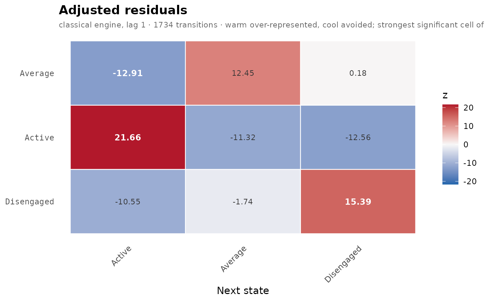
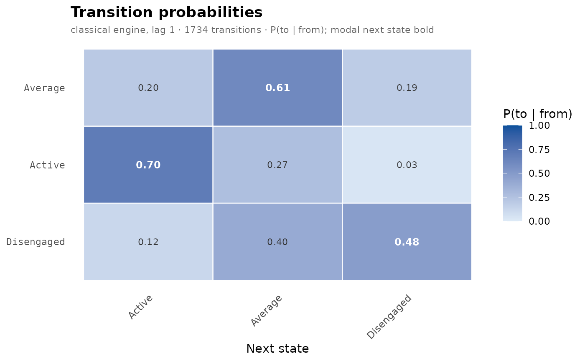
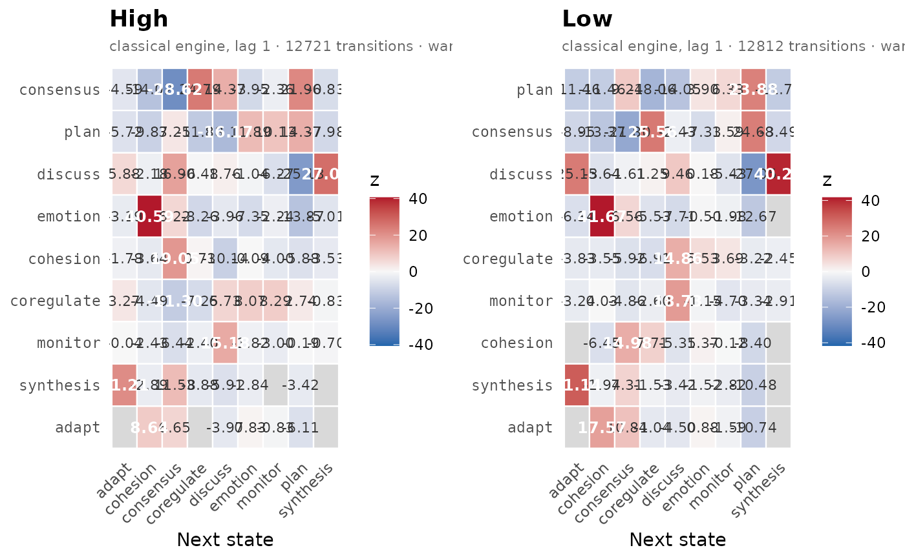

plot() draws a lag sequential analysis fit as a residual heatmap, a lag
transition network, a chord diagram or a polar sunburst, chosen with type;
each display suits a different question. A residual heatmap lays out the full
table of antecedent by consequent states, coloured by the adjusted residual,
and shows at a glance which transitions are over-represented and which are
avoided. A lag transition network draws the states as nodes and the
transitions as directed edges, which shows the paths the process takes. A
chord diagram shows how the transitions out of each state are shared among
the targets, and a polar sunburst shows the same per-source breakdown on a
ring.
The heatmap (default) shows the adjusted residuals, with significant cells in
bold; which switches it to transition probabilities, observed counts or
expected counts. The other types are drawn by plot_transitions(),
plot_chords() and plot_polar(), whose arguments can be passed through
.... A grouped fit is drawn once per group, or in one figure with combined = TRUE.
For the uncertainty of the residuals use plot_forest() on a
bootstrap; for differences between groups, plot() on the result of
compare_lsa() (see plot.lsa_comparison()).
Arguments
- x
An
lsafit fromlsa(), or a grouped fit fromlsa(..., group = ).- type
"heatmap"(default),"network","chord"or"sunburst".- ...
Passed to the chosen display. For
"heatmap":which, one of"residuals"(default),"prob","count"or"expected". For the other types, the arguments ofplot_transitions(),plot_chords()orplot_polar().- combined
For a grouped fit:
FALSE(default) draws one figure per group;TRUEtiles the groups in one figure.
Value
For "heatmap" and "sunburst", a ggplot object, drawn when
printed. For "network" and "chord", the value of
plot_transitions() or plot_chords(), invisibly, with the plot drawn
on the current device. For a grouped fit, a list with one such value
per group, invisibly, after drawing.
Conditions
Errors carry the class lagdynamics_error and lagdynamics_bad_input
when the fit holds no finite values of the quantity requested for the
heatmap.
Examples
fit <- lsa(engagement)
plot(fit)

plot(fit, which = "prob")

plot(fit, type = "network")
#> Registered S3 method overwritten by 'cograph':
#> method from
#> plot.tna_bootstrap tna
 plot(fit, type = "chord")
plot(fit, type = "chord")
 gfit <- lsa(group_regulation_long, actor = "Actor", action = "Action",
time = "Time", group = "Achiever")
plot(gfit, combined = TRUE)
gfit <- lsa(group_regulation_long, actor = "Actor", action = "Action",
time = "Time", group = "Achiever")
plot(gfit, combined = TRUE)
